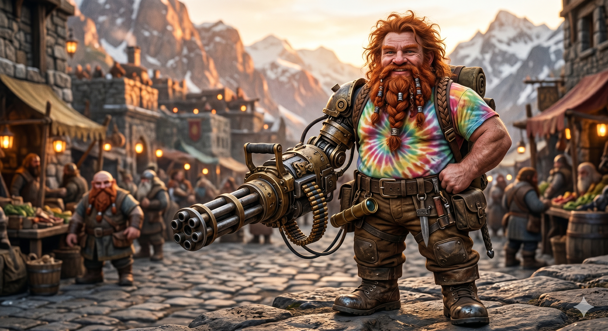

Appears in: Couch Potato Chaos, Couch Potato Crisis
Profile

- Appears in: Couch Potato Chaos, Couch Potato Crisis
- Aliases: Hermes, Crown Prince of Dwarselvania, the exiled Prince
- Cross-book continuity: Appears in both books. Major combatant and party member across the full arc.
- Personality: Hermes is a boisterous, combat-loving dwarf with a dry wit and an unshakable loyalty to his childhood friends Kiwi and [Sir Slimon](./character-sir-slimon.html). He meets adversity with pragmatism rather than despair — surviving the loss of his arm and exile from his homeland without bitterness, instead channelling that energy into becoming a formidable frontline fighter. His sense of humour runs toward the sardonic: he teases Kiwi about “lording her immortality over the rest of us mortals” and throws banana peels during kart races with gleeful abandon (“Hermes, yes!”). Beneath the bluster lies genuine courage and emotional depth. After the princess rescue in Chaos, he cannot meet Kiwi’s eyes and asks, “We failed to protect you before. Can you ever forgive us?” — a rare moment of vulnerability from a character who otherwise masks feeling with jokes and gunfire. He is diplomatically shrewd when it serves him (claiming diplomatic immunity after accidentally shooting up an orphanage) but also possesses an endearing streak of dwarven stubbornness, insisting on wearing a tie-dye t-shirt that a previous Player introduced to Etheria 500 years earlier because he “deemed it a fitting style of attire for a prince.” He is not keen on becoming king but accepts the duty with weary resignation: “Somebody has to stop Dourmal.”
- Backstory: Hermes is the son of Dourmal, [King Under the Laundry Mountain](./character-dourmal.html) and ruler of the dwarven kingdom of Dwarselvania. After ascending to the throne, Dourmal descended into paranoia — exiling dragons from the mountain, spending weeks in solitude, and seeing enemies everywhere. When Hermes was born, Dourmal saw his own newborn son as a potential threat. He drew his great axe and brought it down on the infant, but somehow missed and only severed the child’s left arm. A dwarven nurse rescued the newborn and registered him at a save point, but the damage was permanent: the first time a person uses a save point, their physical template is locked, including any deformities or injuries. Fearing for the child’s welfare, the nurse took him to the elves of Questgivria, where King Iolo raised him alongside Princess Kiwistafel. Hermes grew up in Brightwind as a familiar face in the capital — particularly its drinking establishments, where he developed a well-known taste for Dwarven Death Whisky. His closest companions were Kiwi and [Sir Slimon](./character-sir-slimon.html), a slime paladin; the three were inseparable from childhood. Though raised among elves, Hermes retained his dwarven identity, reading dwarven script and navigating dwarven architecture with instinctive ease. He is the crown prince of Dwarselvania and, by the events of Crisis, has promised the dragon Penryth that he will depose Dourmal, become the new [King Under the Laundry Mountain](./character-dourmal.html), and restore dragons to their ancestral home.
- Significant story events:
- Chapter 12 — Ninja Attack (Chaos): Fighting alongside Kiwi and Slimon against ninja operatives from Hidden Smog village. Overwhelmed by superior numbers, both Hermes and Slimon are killed defending Kiwi. They respawn hours later at the Brightwind save point. This is the event that separates Kiwi from her protectors and sets the rescue quest in motion.
- Chapters 11–12 (Chaos, marketplace fight): First encounters Tasha when she fights him and Slimon in the Brightwind marketplace. Hermes accidentally shoots up an orphanage with his machine gun during the brawl. He claims diplomatic immunity as crown prince and decides to join Ari and Pan’s party to rescue Kiwi, having been impressed by Tasha’s combat prowess. When Tasha escapes jail and rejoins them, he shakes her hand (carefully with his right — “it could have been awkward if she’d extended her left, since Hermes’s was a machine gun”) and tells her, “It was a good fight. Well, except for the collateral and property damage, of course.”
- Chapter 18 — Princess Rescue (Chaos): Part of the assault team at the watchtower. Hermes shouts insults and shoots ineffectually at the Ginormasaurus Rex, at one point swapping his minigun for an RPG launcher that deals only one heart of damage. After the G-Rex is defeated, he is awarded two levels and delivers the line about Kiwi “mentioning her immortality, lording it over the rest of us mortals.”
- Chapter 20 — [Brightwind Keep](./location-brightwind-keep.html) (Chaos): His backstory is publicly revealed through the “Who’s Who in Royalty” column in the Adventurer’s Digest, establishing for the reader his origins, Dourmal’s attempt on his life, and his fostering in Questgivria. Present at the war council where King Iolo launches the orb quest.
- Chapter 28 — The Art of Lies (Chaos): Attends Tasha’s trial, sitting in the stands eating popcorn with Slimon. After her acquittal, he tells her, “That was some amazing deception you spun out there in that courtroom. I’m shocked that they fell for it.”
- Opening chapters — Couch Potato Crisis: Fighting alongside Tasha’s party when a high-level Jabberwock mist monster spawns in a low-level zone. His machine-gun arm blocks tentacle attacks, and when Slimon’s reflection spell bounces the rage debuff onto him, he is forced to stand in place firing continuously — unable to move or take cover. Slimon physically drags him to safety. This is the same type of monster that previously killed him and scattered the party.
- Chapter 2 — Tasha’s Bad Day (Crisis): At the war council, Hermes checks his combat log and confirms that Tasha’s charm debuff was removed when Murderjoy attacked her, providing crucial evidence that Tasha was not a willing collaborator. He volunteers immediately for the rescue mission: “If Slimon is coming, so am I. I can’t abandon Kiwi now, not after everything we’ve been through.”
- The promise to Penryth (Crisis): Confronted by the elder dragon Penryth about his promise to become [King Under the Laundry Mountain](./character-dourmal.html), Hermes grumbles but commits: “Keep yer knickers on. I still plan to do that. I’m not keen on being king, but somebody has to stop Dourmal. As soon as we get Kiwi back, I promise I’ll remove my father from power and return you to your home.” Penryth sends the young dragon Kazezu to accompany and aid him.
- Slimewillow / Dea Latis (Crisis): Takes charge of the party’s logistics — finding a ship, negotiating passage, managing the writ of payment. Critiques Tasha’s inventory management (“You should really organize your inventory”) and shows cautious distrust of the gnome pirate Malarkey.
- Knight of the Metal Joints (Crisis): The party enters the ancient dwarven mines of Bag Taldur in Zhakara. Hermes’s dwarven heritage proves essential: he uses a racial ability to identify the correct passages, reads dwarven inscriptions, and navigates the mine layout from a tome in his inventory. He identifies the Bato golem — “That’s what I’d forgotten about Bag Taldur!” — and fights it with minigun and RPG launcher attachments. Bato’s extending boxing glove shatters his RPG arm, prompting the anguished cry: “That was my favorite arm!”
- The End of Zhakara (Crisis): Part of the final assault on Murderjoy’s war camp. Participates in the battle planning and is identified as needing a parachute for the aerial drop onto the camp. Present when the Orb of Life breaks the charm on Kiwi.
- The Secret of Wombat Island (Crisis): Participates in the kart race on Wombat Island, throwing banana peels at Tasha’s vehicle with the triumphant declaration, “Hermes, yes!”
- Notable Quotes:
“The orphans will all be fine — this can be a learning experience for them. Besides, it was an accident. I’ve decided to join up with Ari and Pan since they’re also trying to find the princess.” — Chapter 11 (Chaos), after accidentally shooting up an orphanage and claiming diplomatic immunity. “There she goes again, mentioning her immortality, lording it over the rest of us mortals.” — Chapter 18 (Chaos), after Kiwi gains multiple levels from the G-Rex fight. “We failed to protect you before. Can you ever forgive us?” — Chapter 18 (Chaos), unable to meet Kiwi’s eyes after the rescue. “If Slimon is coming, so am I. I can’t abandon Kiwi now, not after everything we’ve been through.” — Crisis, volunteering for the rescue mission. “Keep yer knickers on. I still plan to do that. I’m not keen on being king, but somebody has to stop Dourmal.” — Crisis, responding to Penryth’s demand that he honour his promise to become [King Under the Laundry Mountain](./character-dourmal.html). “That was my favorite arm!” — Knight of the Metal Joints (Crisis), after the Bato golem destroys his RPG launcher attachment. “This is a dwarven mine, made by dwarves, and filled with dwarven magic made to be read by dwarves.” — Knight of the Metal Joints (Crisis), explaining how he navigates Bag Taldur. “Hermes, yes!” — The Secret of Wombat Island (Crisis), throwing a banana peel at Tasha’s kart during the race.
- Relationships:
- Princess Kiwistafel (Kiwi): Closest childhood friend. Raised together in Brightwind, they share the easy intimacy of siblings — teasing each other about mortality and immortality, fighting side by side, and sharing an unspoken bond of absolute loyalty. Hermes’s decision to join the rescue party in Crisis is motivated entirely by his refusal to abandon Kiwi.
- [Sir Slimon](./character-sir-slimon.html): Best friend and inseparable companion. The two are virtually always together — fighting, eating popcorn, sharing adventures. Hermes translates Slimon’s bubble-blowing speech for others and trusts him completely. Their rock-paper-scissors games decide who goes on dangerous missions.
- [King [Iolo Questgiver](./character-iolo-questgiver.html)](./character-iolo-questgiver.html): Foster father. Iolo took in the one-armed dwarven infant after Dourmal’s attack, raising him alongside Kiwi in an act of both compassion and diplomacy. Hermes respects the king and serves the crown loyally.
- [King Dourmal](./character-dourmal.html): Biological father and the source of Hermes’s deepest wound. Dourmal tried to kill him as a newborn, taking his arm. Hermes accepts the duty of deposing his father but shows no warmth toward him. His promise to Penryth — “somebody has to stop Dourmal” — is spoken with grim resignation rather than vengeance.
- Kazezu (Kaze): Childhood friend and fellow adventurer. The young steam dragon grew up alongside Hermes, Kiwi, and Slimon. Penryth assigns Kazezu to accompany Hermes and aid in the eventual mission to reclaim the Laundry Mountain.
- Penryth: The elder dragon who holds Hermes to his promise. Their relationship is one of obligation and grudging mutual respect — Penryth is impatient, Hermes is stubborn.
- [Tasha Singleton](./character-tasha-singleton.html): Former adversary turned close ally. Their first meeting is a marketplace brawl where she overpowers him and Slimon. He shakes her hand afterward and they become fast friends. During the Crisis campaign, he provides crucial evidence clearing her name at the war council.
- [Ari / Aralogos Branford](./character-ari-aralogos-branford.html): Fellow party member and reliable ally. They fight side by side in both books, and Hermes defers to Ari’s tactical judgment in combat.
- [Pan / Panella Branford](./character-pan-panella-branford.html): Party companion. Hermes engages with Pan’s youthful energy, particularly during the lighter moments like the kart race on Wombat Island.
- References: Couch Potato Chaos: Chapter 11 - The Pugilist and the Thief, Chapter 12 - Ninja Attack, Chapter 17 - Honor Among Thieves, Chapter 18 - Princess Rescue, Chapter 20 - [Brightwind Keep](./location-brightwind-keep.html), Chapter 28 - The Art of Lies, Epilogue | Couch Potato Crisis: Couch Potato Crisis, Knight of the Metal Joints, Tasha’s Bad Day, The End of Zhakara, The Secret of Wombat Island, Into Zhakara, Epilogue